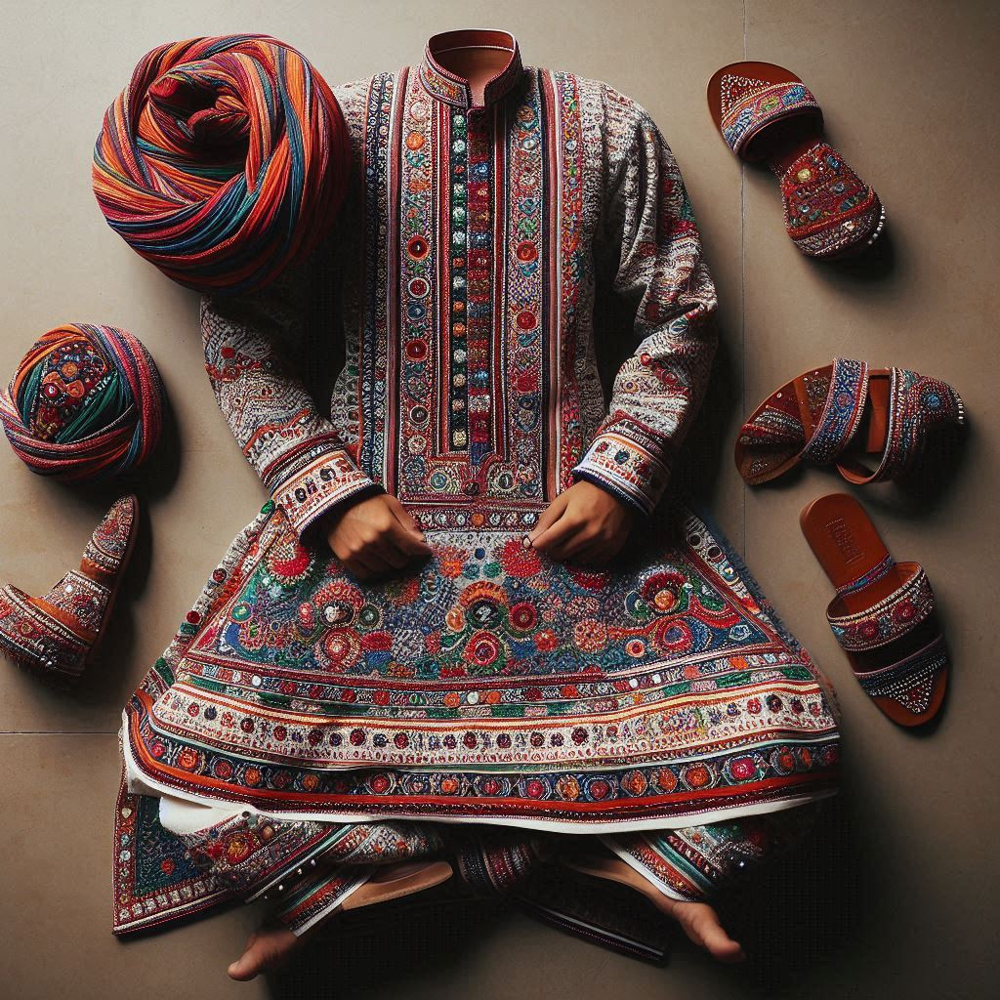
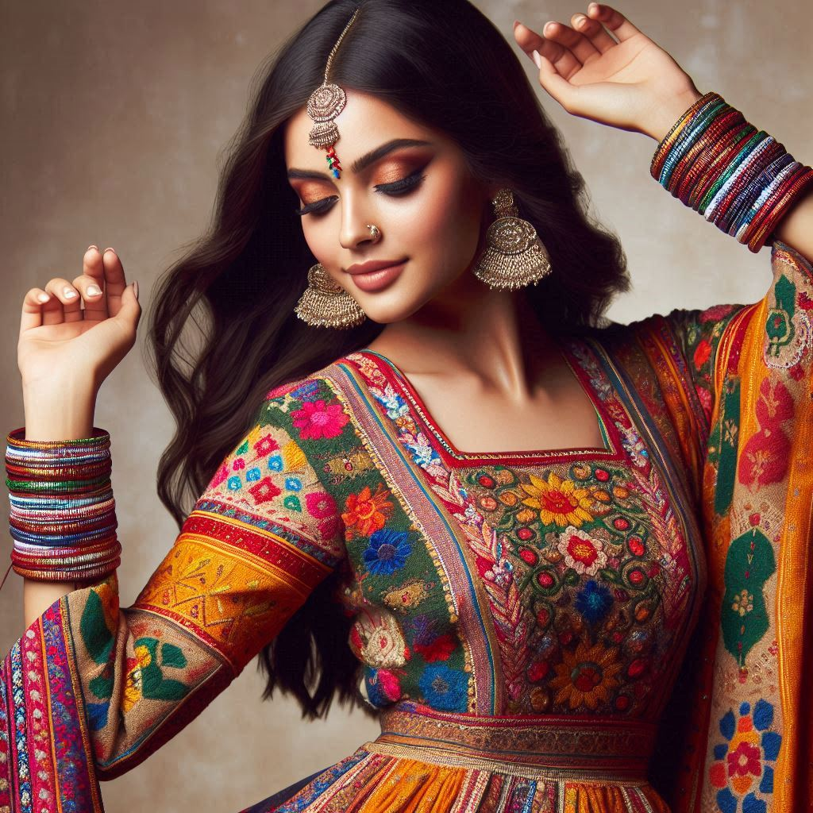

The traditional dress of Gujarat is known for its vibrant colors, intricate embroidery, and unique
designs, reflecting the rich cultural heritage and traditions of the state. Clothing in Gujarat is
often adorned with mirror work, beadwork, and bold patterns, making it stand out as a significant
aspect of the region’s identity.
1. Men's Traditional Dress
- Kediyu and Dhoti/Chorno:
The traditional attire for men in Gujarat consists of a Kediyu (also known as
an Angrakha) – a long, flared, and pleated top with full sleeves. It is usually worn with a
dhoti or chorno (tight, ankle-length trousers). During
festivals, men often opt for brightly colored kediyus embellished with embroidery and mirror
work.
- Bandhni Turban or Pagri: Gujarati men traditionally
wear colorful Bandhani turbans or pagris, especially
during festive occasions. The headgear is often brightly colored and tied in different styles
depending on regional customs.
- Kurta-Pajama: A more casual traditional outfit for men is the
kurta-pajama, a long tunic worn over loose-fitting trousers. This attire is
often worn daily and for special gatherings, decorated with minimal embroidery or designs.
2. Women's Traditional Dress
- Chaniya Choli: The traditional dress for women in Gujarat is the
Chaniya Choli, a three-piece outfit comprising a choli
(blouse), chaniya (long skirt), and a dupatta or
odhni draped over the shoulder and head. The chaniya is often heavily decorated
with mirror work, embroidery, beads, and bold patterns, while the choli may be embellished with
matching designs.
- Bandhani Sarees: Bandhani (or
Bandhej) sarees are popular among women in Gujarat. This traditional
tie-dye technique creates intricate designs and patterns in vibrant colors. Bandhani sarees are
worn during special occasions and religious ceremonies.
- Patola Silk Sarees: Patola sarees are a type of luxurious silk saree unique to
Gujarat. They are handwoven with intricate geometric and floral designs and are highly prized
for their craftsmanship. Patola sarees are often worn by brides and during important ceremonies.
- Gharchola Sarees: This special type of saree is woven with zari and decorated
with patterns, often worn during weddings.
3. Accessories and Jewelry
- Jewelry: Gujarati women accessorize their attire with elaborate jewelry,
including bangles, necklaces, nose
rings, earrings,
anklets, and waistbands. Silver jewelry is
especially popular, with Kutch and Saurashtra regions known for their exquisite silver
ornaments.
- Mirror Work and Embellishments: Mirror work, beads,
sequins, and embroidery are hallmarks of traditional Gujarati clothing. These embellishments add
a distinct charm and are prominently featured on traditional outfits like chaniya cholis and
kurtas.


4. Regional Variations
- Rabari Attire: The Rabari community, a semi-nomadic tribal
group in Gujarat, has its own distinct dress style. Women wear heavily embroidered blouses and
long black skirts, while men wear white attire with turbans.
- Tribal Clothing: Tribal groups in Gujarat such as the Bhils,
Garasias, and Siddis have unique traditional clothing that
reflects their heritage and customs. These outfits often feature colorful designs and
distinctive patterns.
5. Modern Adaptations
In urban areas, traditional attire is often worn during festivals, weddings, and cultural events,
while modern attire like sarees, salwar kameez, and western
outfits are more commonly seen in daily life. Fusion wear, combining traditional
and contemporary styles, is also popular among the youth.
Conclusion
The traditional dress of Gujarat is a blend of elegance, color, and heritage, reflecting the state’s
artistic traditions and vibrant culture. Whether it’s the detailed embroidery, bright hues, or
intricate patterns, Gujarati attire captures the essence of its people’s creativity and spirit.